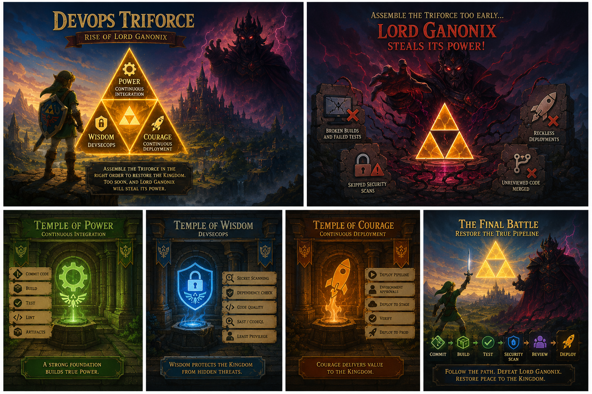

Knowledge Check
Which release order keeps production secure?
Master CI/CD, secure the pipeline, and stop the Shadow Deploy Lord from corrupting production.
Do not assemble the Triforce before the gates are secure. Build, test, scan, review, then deploy.
Choose your next command:

Run the release path and watch each gate ignite in sequence.
Timeline idle. Awaiting command.
Which release order keeps production secure?
| Practice | Primary Focus |
|---|---|
| CI | Frequent integration with build and test automation |
| CD | Reliable release flow to deploy-ready state or production |
| DevOps | Shared ownership between development and operations |
| DevSecOps | Security checks integrated into delivery workflows |
Unlock all badges by restoring all temples with low corruption.